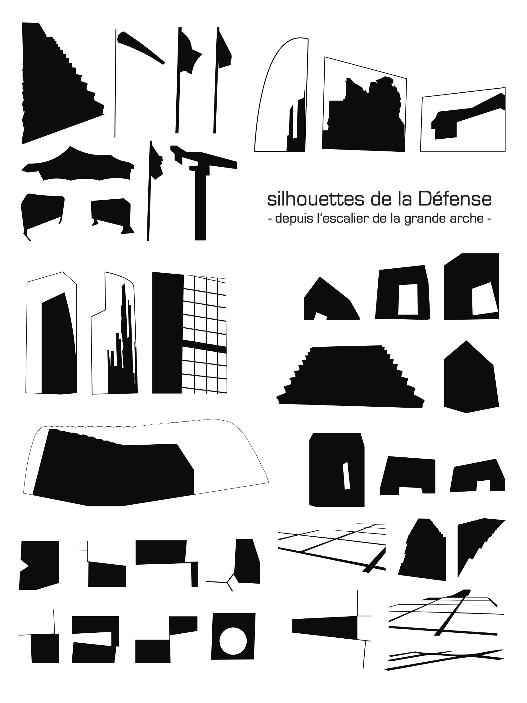
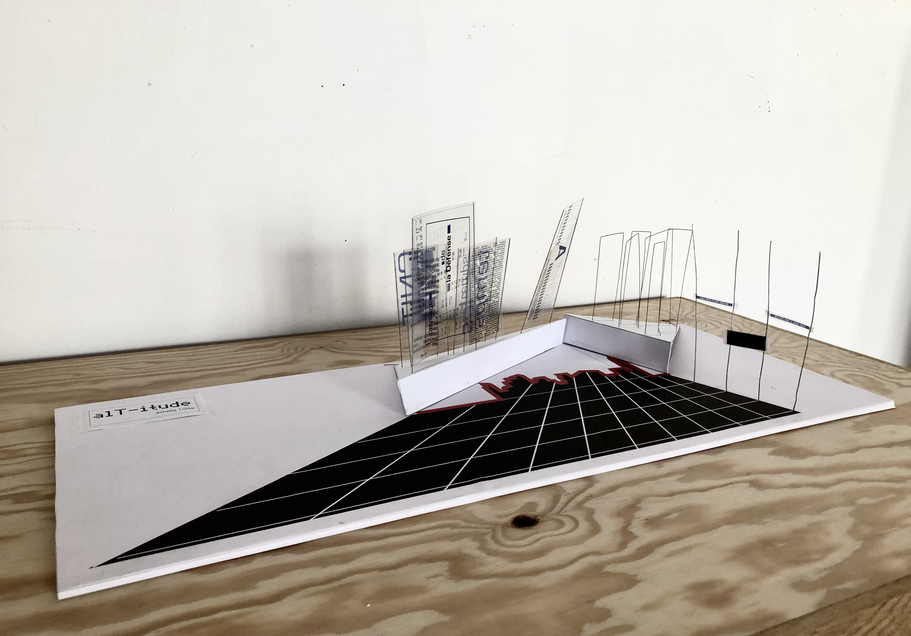
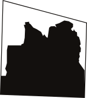
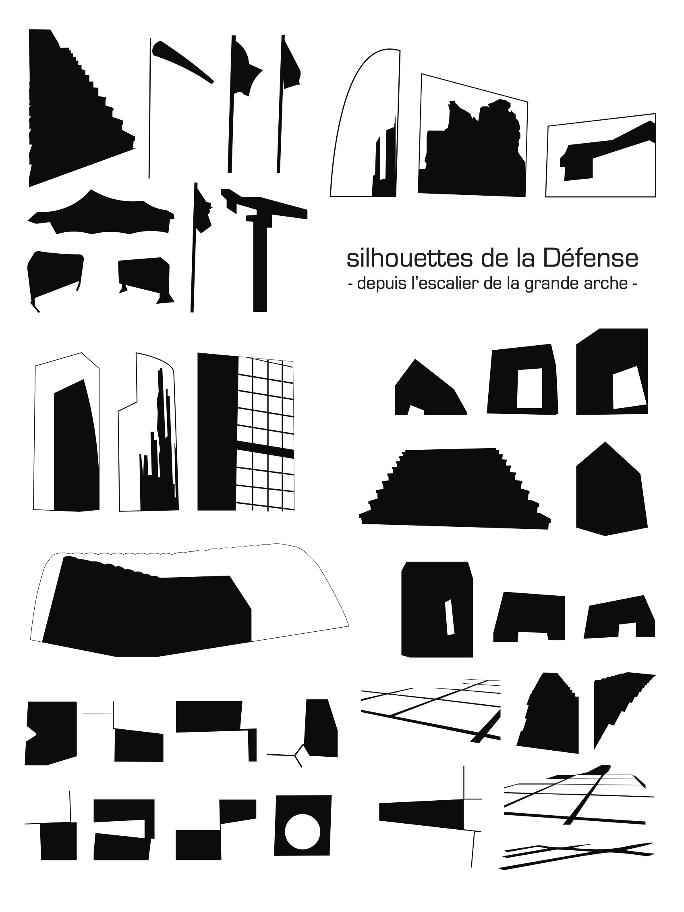
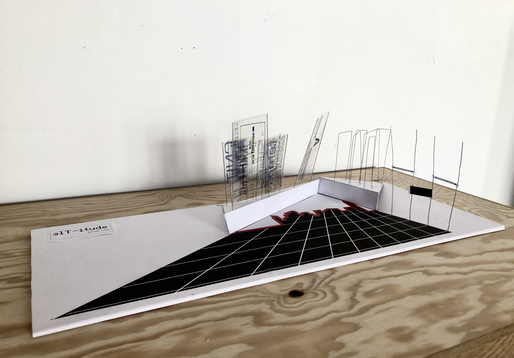
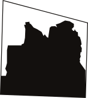

Les lignes, les ouvertures, les fentes et le fourmillement de personnes sont caractéristiques des escaliers de la grande arche de la Défense.
Lorsque l’on s’installe sur les marches, on adopte un point de vue en surplomb sur l’esplanade de la Défense, ce qui permet de voir comment la lumière s’empare des grandes tours qui nous encerclent.
C’est un espace dans lequel tout s’organise par niveau et par mouvement simultanés.
Plus généralement, la Défense est une plateforme intégrée à de multiples réseaux (transilien, numérique, financier,…).
Ainsi, l’installation que j’ai projetée dans ce projet se concentre sur les déplacements du visiteur. L’espace que j’ai reconstitué propose de renverser les repères initiaux pour évoquer le point de vue, la trajectoire, la vitesse, l’accès aux espaces.
L’aspect ascensionnel et monumental de cet espace est amené par des structures qui s’élèvent et envahissent le champ de celui qui déambule dans l’installation.

 




